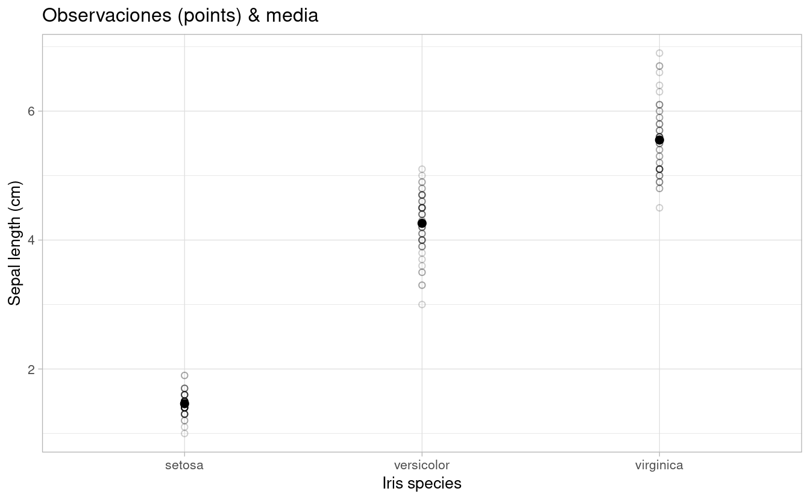
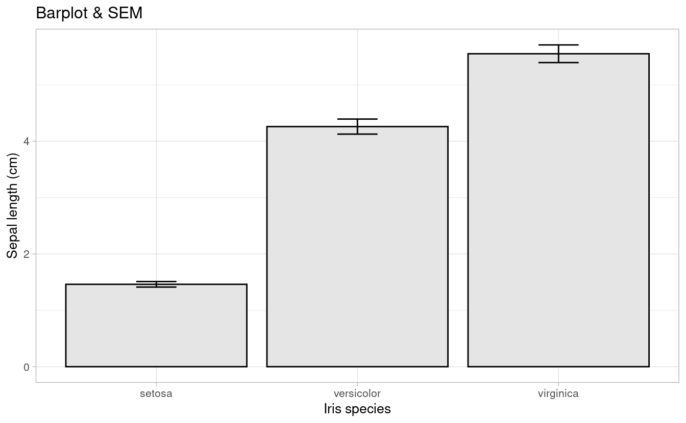
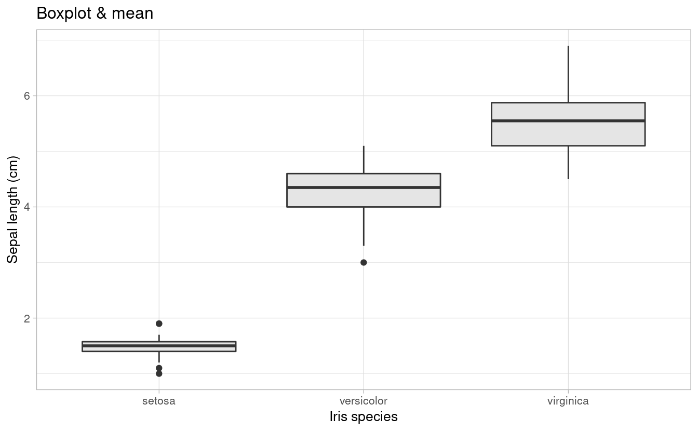
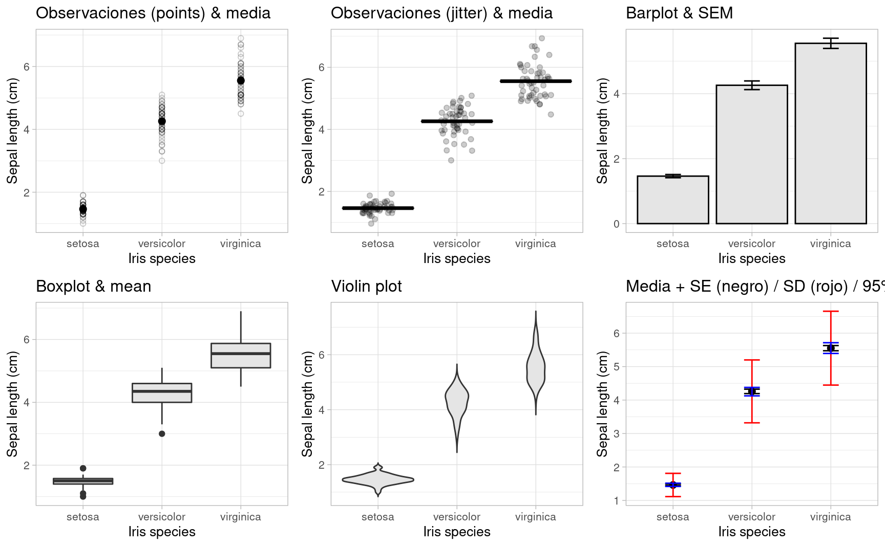

5.2 Comparación de niveles de factores
Los gráficos de barra, ampliamente usados en publicaciones científicas, son cada vez más criticados por “ocultar” la naturaleza de las observaciones (Drummond and Vowler 2011; Weissgerber 2015)

De (Drummond and Vowler 2011): Fig 1. Many different datasets can lead to the same bar graph.
The full data may suggest different conclusions from the summary statistics. The means and SEs for the four example datasets shown in Panels B–E are all within 0.5 units of the means and SEs shown in the bar graph (Panel A). p-values were calculated in R (version 3.0.3) using an unpaired t-test, an unpaired t-test with Welch’s correction for unequal variances, or a Wilcoxon rank sum test. - In Panel B, the distribution in both groups appears symmetric. Although the data suggest a small difference between groups, there is substantial overlap between groups. - In Panel C, the apparent difference between groups is driven by an outlier. - Panel D suggests a possible bimodal distribution. Additional data are needed to confirm that the distribution is bimodal and to determine whether this effect is explained by a covariate. - In Panel E, the smaller range of values in group two may simply be due to the fact that there are only four observations. Additional data for group two would be needed to determine whether the groups are actually different.
A continuación presentamos algunas opciones gráficas que surgen de la combinación de medidas de posición y de dispersión.
#Aprovechamos para customizar el `theme` a nuestro gusto y agregar algunos detalles:
p0 <-
ggplot(iris) +
aes(x = Species, y = Petal.Length)+
labs(x = "Iris species", y ="Sepal length (cm)") +
theme_light(base_size = 10)
p0
5.2.1 Observaciones + media / mediana
p1 <- p0 +
geom_point(shape = 1, alpha=0.2)+
stat_summary(fun= mean, #median
fun.min= mean,
fun.max = mean,
geom = "point",
size = 2)+
ggtitle("Observaciones (points) & media")
p1
p2 <- p0 +
geom_jitter(width = 0.2, alpha=0.2)+
stat_summary(fun = mean, #median
fun.min= mean,
fun.max = mean,
geom = "crossbar",
size = 0.5)+
ggtitle("Observaciones (jitter) & media")
p2
5.2.2 Barplot + SE
p3 <-p0 +
# geom_bar(stat="identity") +
stat_summary(fun=mean, position=position_dodge(width=0.95),geom="bar",
colour="black",fill="grey90")+
stat_summary(fun.data=mean_cl_normal, geom="errorbar", width=0.2) +
ggtitle("Barplot & SEM")
# geom_text(data= let, aes(label = M, x= trt, y=1, hjust=0.5),size = 4)
p3
5.2.3 Box-plot
p4 <-p0 +
geom_boxplot(fill = "grey90") +
ggtitle("Boxplot & mean")
p4
5.2.4 Violin plot
p5 <-p0 +
geom_violin(trim=FALSE,fill = "grey90")+
ggtitle("Violin plot")
p5 
5.2.5 Media & dispersión
p6 <-p0 +
stat_summary(fun="mean", geom="point", size=2)+
stat_summary(fun.data = mean_se, geom = "errorbar", width=0.2)+
stat_summary(fun.data= mean_sdl, geom = "errorbar", color="red", width=0.2)+
stat_summary(fun.data = mean_cl_boot, geom = "errorbar", color="blue", width=0.2)+
ggtitle("Media + SE (negro) / SD (rojo) / 95% CI (negro)")
p6
library(cowplot)
plot_grid(p1, p2, p3, p4, p5, p6, ncol = 3, nrow = 2)
Si deseamos explorar las distribuciones de las variables podemos optar por un histograma o por diagramas de densidad.
cowplot::plot_grid(
iris %>%
ggplot(aes(Petal.Length, fill=Species)) +
geom_histogram()+
guides(fill=FALSE)
,
iris %>%
ggplot(aes(Petal.Length, fill=Species)) +
geom_density(alpha=0.7)
,
align="h"
)
La gran comunidad de usuarios de R disponibiliza sus creaciones e incluso trabaja en extensiones que amplían la potencialidad de sus paquetes.
Se podría afirmar que no hay límites para la creación. Digamos, que no importa el “¿cómo?” si no el “¿qué?”
Algunas pruebas de ello son los siguientes links: